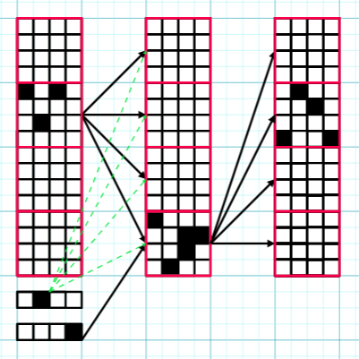

Ping pong computation in superposition
Overview
This post builds on Circuits in Superposition 2, using the same terminology.
I focus on the \(z=1\) case, meaning that exactly one circuit is active on each forward pass. This restriction simplifies the setting substantially and allows a construction with zero error, with \(T = \frac{D^2}{d^2}\) , \(L+2\) layers, and width \(D(1+\frac{1}{d} + \frac{\lceil\text{log}_2{\frac{D}{d}}\rceil}{D})\). While the construction does not directly generalise to larger \(z\), the strategy for mitigating error should still be relevant. I think the ideas behind the construction could be useful for larger \(z\), and the construction itself is quite neat.
Ping-pong trick for \(z=1\)

A circuit is specified by an ordered pair of memory blocks (the red squares). There are \(\frac{D}{d}\)memory blocks, so \(\frac{D^2}{d^2}\) circuits can be coded for. The circuit is computed by "bouncing" between these two memory blocks. White squares represent neurons with no activation, and black squares represent neurons with any amount of activation. Green-dashed arrows represent the bias specific to block \(i\). Here \(D=64\), \(d=16\).
This is basically the same trick as ping-pong buffers.
We divide the layer width \(D\) into \(\frac{D}{d}\) contiguous memory blocks of size \(d\).
We start with an input consisting of a vector \(x \in \mathbb{R}^{d}\), together with one-hot encodings of a pair of memory blocks (\(i,j\)).
We initially load the input \(x\) into memory block \(i\).
Using a linear map applied to the one-hot encoding of memory block \(j\), we add a massive negative bias to all blocks in the next layer except memory block \(j\). This ensures that only memory block \(j\) can have neurons with non-zero activations in the following layer.
Additionally, using a linear map applied to the one-hot encoding of \(i\), we can freely set a size \(d\) bias \(b^{1}_{(i,j)}\) for the next layer's block \(j\) as a function of \(i\) (see the green arrows in the figure above).
We are also free to pick the \(d \times d\) linear map \(W^{1}_{(i,j)}\) between block \(i\) in the first layer and block \(j\) in the second layer.
The end result is that when we run the network, all the blocks apart from block \(j\) in the second layer have \(0\) activation (because of the negative bias added by the one-hot encoding of \(j\)), while Block \(j\) has neuron activations corresponding to \(\text{ReLU}\)(\(W^{1}_{(i,j)}x\)\(+b^{1}_{(i,j)}\)).
Now we perform the same trick in reverse, this time bouncing block \(j\) back to block \(i\). So that the third layer will have \(\text{ReLU}(W^{2}_{(j,i)}\text{ReLU}(W^{1}_{(i,j)}x + b^{1}_{(i,j)}) + b^{2}_{(j,i)})\) in the \(i\)th block.
We continue this process:
Layer 1: \(i \to j\)
Layer 2: \(j \to i\)
Layer 3: \(i \to j\)
\(\ldots\)
Layer \(L\): (\(i \to j\)) or (\(j \to i\)) depending on parity
Each transition between blocks we can freely specify a layer of a width \(d\) neural network.
We transition \(L\) times, and require \(2\) layers to load and unload the inputs from the appropriate memory blocks, so we consume \(L+2\) layers total.
Binary encoding trick
We can optimize the above construction further by alternately swapping out the one-hot encoding of one of the blocks with a compressed \(\lceil {\text{log}_2(\frac{D}{d})} \rceil\) length binary encoding.
On odd layers, we use a one-hot encoding for block \(i\), and a binary encoding for block \(j\).
On even layers, block \(i\) uses a binary encoding, and block \(j\) uses a one-hot encoding.
We can implement this swapping using an appropriately set bias and linear map between layers.
The idea is that on layers where a block simply suppresses all but one block, we only need the binary encoding. A rank argument tells us that we can't naively compress the encoding of the block which provides the bias, however.
()Parameter counting argument
The above construction uses \(D(1+\frac{1}{d}+ \frac{\lceil \text{log}_2(\frac{D}{d}) \rceil}{D})\) width and \(L+2\) layers, to encode T = \(\frac{D^2}{d^2}\) circuits of width \(d\) and depth \(L\).
Note that according to a naive parameter counting argument, assuming injectivity of the map from parameters of a neural network to behaviours, we should at most be able to fit in \(\frac{(L+2)(D^2(1+\frac{1}{d}+\frac{\lceil\text{log}_2{\frac{D}{d}} \rceil}{D})^2+D(1+\frac{1}{d}+\frac{\lceil \text{log}_2{\frac{D}{d} \rceil}}{D} ))}{L(d^2+d)}\) circuits into such a network.
So for large \(D\) the "theoretical" maximum number of circuits we can fit into the network tends to \(\frac{D^2}{d^2} \cdot \frac{L+2(1+\frac{1}{d})}{L}\) .
So \(\frac{D^2}{d^2}\) is not bad, especially for large-ish \(d\) where we can pay off the cost of the one-hot encoding.
Optimizing the number of layers?
\(L+2\) layers seems hard to optimise down because the length \(d\) input to the first layer of the model interacts with the same \((d+1)D(1+\frac{1}{d}+\frac{\lceil\text{log}_2(\frac{D}{d})\rceil}{D})\) parameters on each forward pass, because the input is placed in the same initial position each time. The same is true for the final layer of the network where the output needs to be placed in a fixed final position. So the majority of the \(D^2(1+\frac{1}{d}+\frac{\lceil\text{log}_2(\frac{D}{d})\rceil}{D})^2+D(1+\frac{1}{d}+\frac{\lceil\text{log}_2{\frac{D}{d}}\rceil}{D})\) parameters on the first and final layers are wasted.
I would be very interested in even impractical ways to get around this barrier. Tentatively I think this layer constraint is not just a quirk of the particular setup.
Testing
I have tested a similar construction up to \(T=16384, D = 1024, d = 8\), using this Google Colab script.
This was before I came up with the binary encoding trick, so it encodes \(16384\) randomly initialized circuits of width \(8\), given a \((1024+256)\) width network. With the binary encoding trick, it should be possible to get this down to a width of (\(1024+128+7\)).
I have only tested one-layer networks, but since the output format matches the input format, this is sufficient to validate the construction.
Why focus on zero-error solutions?
I'm pretty skeptical of computation in superposition solutions that involve any noise in intermediate layers whatsoever. Because the Lipschitz constants of neural networks are terrible, and so the constant factors involved in the asymptotics suffer as well. I want to have concrete numbers, not just asymptotics, and they seem hard to obtain when allowing for noise in intermediate layers.1
My way of avoiding having to think about Lipschitz/High-dimensional probability stuff is to work on finding solutions which work perfectly with probability \(p\), and otherwise fail catastrophically.
-
[Although it'd be nice if there's a way to make use of Lipschitz-constrained neural networks here.] ↩